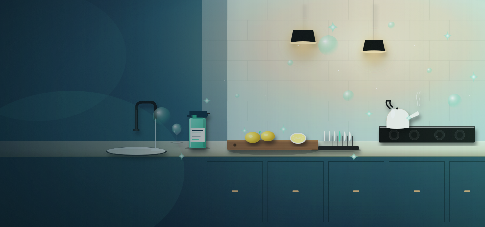
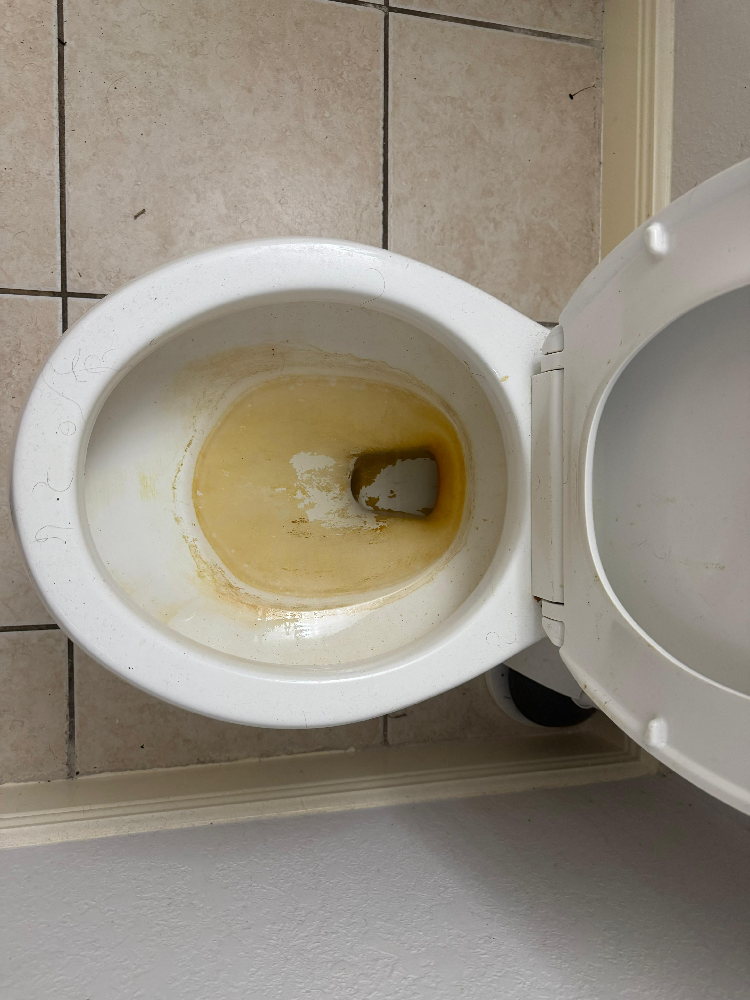
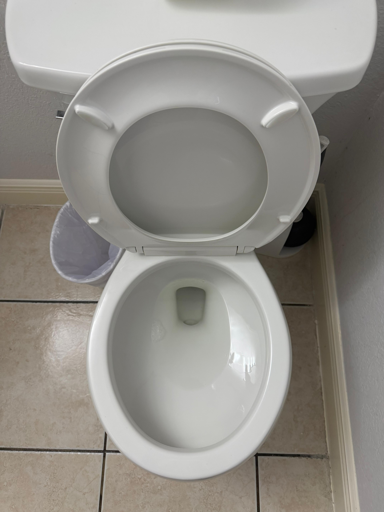
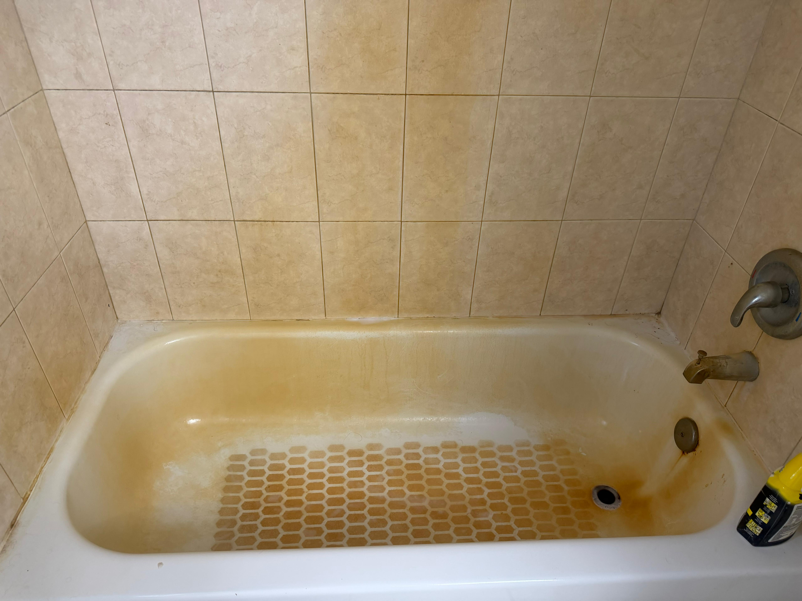
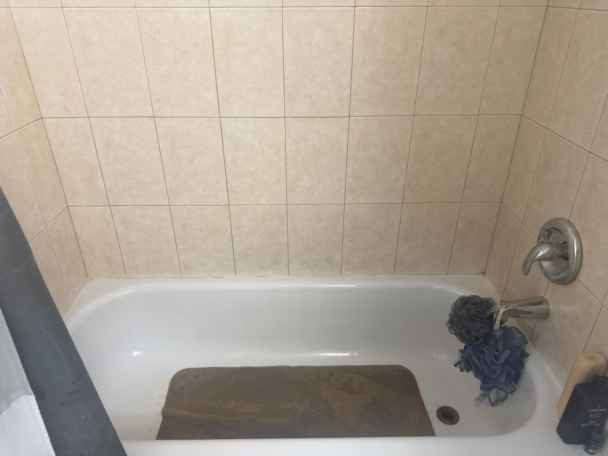
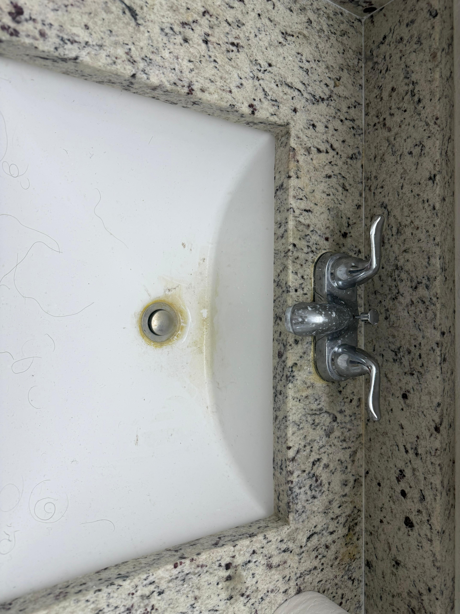
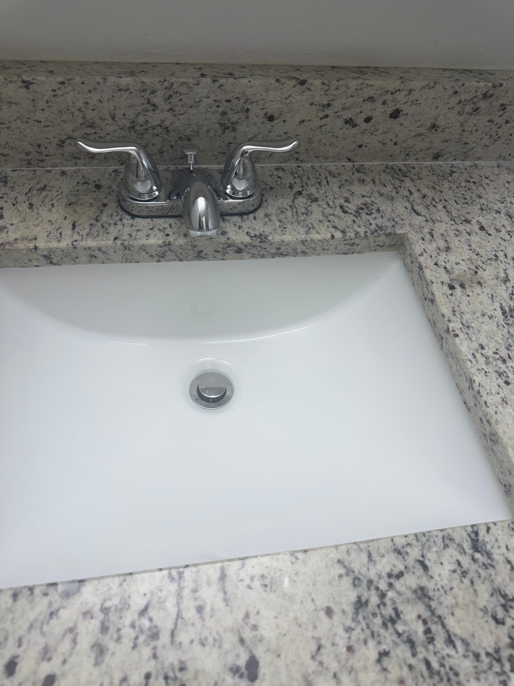

Professional Kitchen & Bathroom Deep Cleaning in Tampa, FL
Kitchens and bathrooms take more abuse than any other rooms in your home. Grease coats the stovetop and range hood. Soap scum builds up on shower glass. Hard water leaves white mineral deposits on faucets and fixtures. Mold creeps into tile grout in Tampa’s humid climate. These are the rooms where a quick wipe-down is never enough – and they are exactly where Easy Clean Service delivers the most dramatic results. Our targeted kitchen and bathroom deep cleaning goes surface by surface, tackling the grime that regular cleaning cannot touch.
Why Tampa Kitchens and Bathrooms Demand More Than Standard Cleaning
These two rooms see the most moisture, the most bacteria, and the most buildup of any space in your home. In Tampa’s subtropical climate, the combination of heat and humidity accelerates mold growth in bathrooms and creates the perfect conditions for grease to harden on kitchen surfaces. Hard water from Tampa’s municipal supply leaves calcium and mineral deposits on every fixture, faucet, and glass surface that water touches. Over time, these layers of buildup become nearly impossible to remove with consumer cleaning products.
A professional kitchen and bathroom deep cleaning uses commercial-grade degreasers, mold and mildew treatments, hard water deposit removers, and grout-specific cleaning solutions that are far more effective than what you find on store shelves. Our team knows which products to use on which surfaces to get results without damaging your finishes, tile, or fixtures.
Many Tampa homeowners handle their own bedrooms and living areas just fine but find themselves losing the battle against grease splatter on the range hood, black mold in the shower corners, and cloudy mineral film on glass shower doors. This service exists specifically for those rooms – the rooms where the mess fights back.
What Our Tampa Kitchen Deep Cleaning Includes
Our kitchen deep cleaning is not a surface wipe – it is a thorough, systematic cleaning of every surface, inside every appliance, and into every corner of the room. Here is the complete checklist our team follows:
- Degrease stovetop surface, burner grates, drip pans, and control knobs
- Clean and degrease range hood exterior, underside, and removable filters
- Clean inside the oven including racks, walls, door glass, and rubber seal
- Steam-clean and sanitize interior of microwave including turntable and ceiling
- Wipe and sanitize inside refrigerator shelves, drawers, door compartments, and rubber gaskets
- Clean and polish sink basin, faucet, handles, and disposal splash guard
- Remove hard water deposits and mineral buildup from faucet and sink fixtures
- Degrease and sanitize all countertops and backsplash tile
- Scrub tile grout lines on backsplash and floor with targeted grout treatment
- Wipe all cabinet fronts, handles, and dust tops of upper cabinets
- Clean light fixtures, under-cabinet lighting, and pendant lights
- Wipe all small appliance exteriors (toaster, coffee maker, blender, stand mixer)
- Clean inside and outside of dishwasher door and edges
- Detail baseboards throughout the kitchen
- Wipe door frames, light switch plates, and outlet covers
- Sweep and mop floor including edges, corners, under toe kicks, and behind moveable items
What Our Tampa Bathroom Deep Cleaning Includes
- Scrub and disinfect toilet completely including bowl interior, base, tank exterior, hinges, seat underside, and handle
- Deep-scrub bathtub and shower walls to remove soap scum, body oil residue, and mildew staining
- Treat and scrub all tile grout throughout the bathroom with targeted mold and mildew cleaning solution
- Remove hard water stains and mineral deposits from glass shower doors, faucets, showerheads, and chrome fixtures
- Clean and sanitize sink basin, faucet, handles, countertop, and vanity surface
- Clean mirror and medicine cabinet exterior streak-free
- Polish all chrome fixtures including towel bars, toilet paper holder, robe hooks, and door hardware
- Wipe inside vanity cabinet and drawers
- Clean exhaust fan vent cover to restore proper airflow and reduce moisture retention
- Detail baseboards throughout the bathroom
- Wipe door frames, light switch plates, and window sills
- Scrub floor on hands and knees with focused attention on grout lines, corners, behind toilet, and along wall edges
- Treat and remove visible mold or mildew on caulk lines, tile joints, and shower corners
- Clean and polish shower door tracks and hardware
Real Tampa Bathroom Transformations
Hard water stains, mineral build-up, and grime don't just look bad — they get harder to remove the longer they sit. Here are three real before-and-after results from Tampa homes our team cleaned.

Before
After
Before
After
Before
AfterTampa-Specific Challenges Our Professional Cleaning Solves
Tampa’s climate and water supply create a unique set of cleaning challenges that homeowners across the country simply do not face at the same intensity. Here are the most common problems we tackle in Tampa kitchens and bathrooms – and how our professional-grade approach gets results that consumer products cannot match:
- Hard water stains and mineral deposits: Tampa’s municipal water supply contains elevated levels of calcium and magnesium that leave white, chalky deposits on faucets, showerheads, glass shower doors, stainless steel sinks, and chrome fixtures. Over time, these minerals etch into surfaces and become nearly impossible to remove with vinegar or standard bathroom cleaners. Our team uses professional-grade mineral deposit dissolvers that break down the calcium without scratching chrome, glass, or stainless steel finishes.
- Mold and mildew in grout and caulk lines: Tampa’s average annual humidity exceeds 74 percent, creating the ideal breeding environment for mold and mildew – especially in bathrooms with poor ventilation. Mold penetrates beneath the surface of grout and caulk, which is why wiping it away with bleach spray only removes what is visible on top. Our team applies targeted mold treatment solutions that penetrate into the grout pores and kill mold at the root, then scrubs the surface clean. For caulk lines that are too far gone, we will advise you on when re-caulking is the better long-term solution.
- Hardened grease on kitchen surfaces: Every time you cook, microscopic oil droplets become airborne and settle on every nearby surface – the range hood, the cabinets above and beside the stove, the backsplash, the ceiling, and even the top of the refrigerator. Over weeks and months, these oil particles oxidize and harden into a sticky, yellow film that standard kitchen cleaners cannot dissolve. Our commercial degreasers cut through these layers of baked-on grease and restore the original finish without damaging wood, painted surfaces, or stainless steel.
- Soap scum on shower glass and tile: The combination of Tampa’s hard water and soap creates a stubborn mineral-soap compound that coats glass shower doors, tile walls, and fixtures with a hazy, gritty film. Standard bathroom sprays barely dent it because the film is chemically bonded to the surface. Our specialized soap scum removers dissolve the compound at the molecular level, and hand-scrubbing restores the transparency of glass doors and the shine of tile surfaces.
- Discolored, stained, or darkened grout: Grout is porous and absorbs moisture, dirt, soap residue, and cleaning product buildup over time. White grout turns gray, tan, or even black in high-moisture areas. In kitchens, cooking grease darkens floor grout near the stove and food prep areas. Our grout cleaning process uses agitation brushes and professional-grade solutions to lift embedded stains from within the grout pores and restore the original color. Most grout can be brought back to near-original condition; grout that is severely eroded or crumbling may need regrouting, and we will advise you honestly if that is the case.
When to Book Kitchen & Bathroom Cleaning
- Quarterly maintenance: Most Tampa homes benefit from professional kitchen and bathroom deep cleaning every 3 to 4 months. This prevents grease, mold, and mineral deposits from becoming entrenched and keeps these high-use rooms looking their best year-round.
- Before hosting guests or events: If you have family visiting for the holidays, hosting a dinner party, or throwing a birthday celebration, a professional cleaning of the kitchen and bathrooms ensures the rooms your guests use most are spotless.
- Complement to regular cleaning: Many of our recurring cleaning customers add a targeted kitchen and bathroom deep cleaning every quarter. The regular visits maintain everyday tidiness, while the quarterly deep cleans tackle the accumulated buildup that standard visits do not address.
- After renovations or repairs: Kitchen or bathroom remodeling leaves behind construction dust, grout haze, caulk residue, and adhesive traces that require professional-level cleaning to remove properly.
- When DIY is not working: If you have been scrubbing the same grout stains or hard water deposits for months without results, it is time to call a professional. Our commercial-grade products and techniques solve problems that consumer products simply cannot.
How It Works
- Tell us which rooms need attention: Call (813) 534-9216 or fill out the estimate form. Let us know which rooms you want cleaned (kitchen only, bathrooms only, or both), the number of bathrooms, and any specific problems like heavy grout staining or persistent mold. We will send you a clear, upfront quote.
- Confirm your appointment: Pick a date and time. We offer weekday and Saturday availability. You will receive a confirmation with your team’s arrival window.
- We bring everything and get to work: Our team arrives with all professional-grade supplies and equipment including commercial degreasers, mold treatments, mineral deposit removers, grout cleaning solutions, and microfiber tools. We work systematically through each room following our detailed checklist.
- See the results: When we finish, you will see a visible transformation – especially in grout, on stovetops, inside ovens, and on glass shower doors. If anything does not meet your expectations, we will address it before we leave.
Kitchen & Bathroom Deep Cleaning Costs in Tampa, FL
Pricing depends on the number of rooms, their size, and the current condition. Kitchens with heavy grease buildup or bathrooms with extensive mold and grout staining require more time and product, which is reflected in the pricing. Here are typical ranges for Tampa homes:
| Scope | Typical price range | Time estimate |
|---|---|---|
| Kitchen only | $120 – $200 | 1.5 – 3 hours |
| 1 bathroom only | $80 – $150 | 1 – 2 hours |
| Kitchen + 1 bathroom | $180 – $300 | 2.5 – 4 hours |
| Kitchen + 2 bathrooms | $240 – $400 | 3.5 – 5.5 hours |
| Kitchen + 3+ bathrooms | $320 – $500+ | 4.5 – 7+ hours |
The kitchen-only and single-bathroom options give homeowners a way to address just the room that needs it most without committing to a full-house service. The combo pricing for kitchen plus bathrooms offers better value per room than booking each separately.
NOTE: Confirm all price ranges with Kessia before publishing. Pricing should be adjusted for homes with extremely large kitchens, commercial-grade appliances, or specialty tile/stone surfaces.
Get Your Personalized Kitchen & Bath EstimateKitchen & Bathroom Cleaning Questions from Tampa Homeowners
Pricing depends on the number of rooms and their condition. A kitchen-only deep cleaning typically ranges from $120 to $200. A single bathroom ranges from $80 to $150. The kitchen plus one bathroom combo typically runs $180 to $300. Homes with heavy grease buildup, severe grout staining, or extensive hard water deposits may fall toward the higher end. Call us at (813) 534-9216 for a free estimate based on your specific situation.
In most cases, yes. We use commercial-grade mineral deposit removers specifically designed for glass surfaces. These products dissolve calcium and magnesium buildup that household vinegar and standard bathroom sprays cannot penetrate. For shower doors with months or years of buildup, we can significantly restore clarity and transparency. Glass that has been permanently etched by long-term mineral exposure may not return to fully transparent, but the improvement is still dramatic. We will give you an honest assessment during the cleaning.
For most Tampa homes, a professional kitchen and bathroom deep cleaning every 3 to 4 months keeps grease, mold, and mineral deposits under control. Homes with heavy cooking, multiple household members, or bathrooms with poor ventilation may benefit from more frequent service – every 2 months for high-use bathrooms is not uncommon. Many of our customers pair quarterly kitchen and bathroom deep cleans with regular biweekly house cleaning for comprehensive coverage.
In most cases, yes. Our grout cleaning process uses targeted solutions and agitation brushes to lift embedded stains from within the grout pores and restore the original color. The results are often dramatic – grout that appears black or gray can often be brought back to near-white. Grout that is severely deteriorated, crumbling, or physically damaged may need professional regrouting, which is outside our scope, but we will advise you honestly if that is the situation.
Yes. Our kitchen deep cleaning includes inside the oven (racks, walls, door glass, and seal), inside the microwave (turntable, walls, and ceiling), and inside the refrigerator (shelves, drawers, door compartments, and rubber gaskets). We also clean the inside of the dishwasher door and edges. Basically, if a guest or homeowner would open it, we clean it.
Absolutely, and this is one of our most popular combinations. Many of our recurring cleaning customers add a kitchen and bathroom deep cleaning every quarter to complement their regular weekly or biweekly service. The regular visits maintain everyday cleanliness throughout the home, while the quarterly deep cleaning tackles the accumulated buildup in kitchens and bathrooms that standard visits do not address. Ask about bundled pricing when you combine this service with a regular cleaning plan. Learn about our regular cleaning plans.
Get Your Free Kitchen & Bathroom Cleaning Estimate
Tell us which rooms need professional attention and we will put together a personalized quote. Call (813) 534-9216 for an immediate estimate, or fill out the form and we will respond within a few hours.